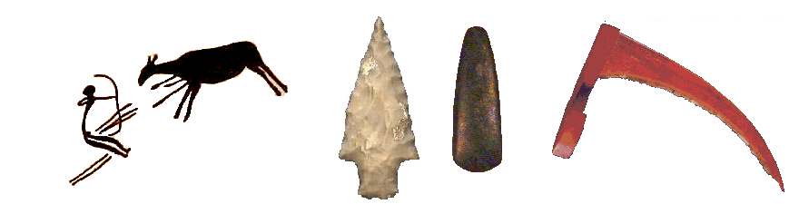

Prehistoria
Maderuelo y la cuenca del Riaza ha sido poblada desde la Edad de Piedra. Si quieres saber más sobre el Paleolítico o el Neolítico de esa comarca….
El Paleolítico
Hace 500.000 años
La Meseta ha tenido un poblamiento muy antiguo, como lo demuestran los hallazgos de la Sierra de Atapuerca (100Km al norte de Maderuelo). Nuestro ascendiente, el Homo Erectus, ya conocía el fuego, lo que le sirvió para adaptarse a los primeros periodos glaciares.
Hace 100.000 años
Una especie nueva, el Homo Neardenthal, muy bien adaptado al frío de las glaciaciones ocupó estas tierras. Era eminentemente cazador y se alimentaba de grandes herbívoros. Prefería las estepas y bosques poco espesos. Su densidad de población siempre fue muy baja y los periodos glaciares recortaron drásticamente la población en la meseta, por la dureza del clima. Por el contrario, los periodos interglaciares, el clima llegó a parecerse al de la sabana africana con gran diversidad de fauna.
El Mesolítico
Hace 18.000 años
El final de la última y más intensa glaciación, la meseta estaba habitada por el Homo Sapiens, el Hombre de Cromagnon, del que descienden todas las razas humanas. El clima se suavizó tanto que en nuestra comarca el bosque comenzó a dominar sobre la pradera y se dio una mayor diversidad en la flora, mientras que comienzan a escasear los grandes herbívoros que dominaron el Paleolítico.
La vega del Riaza estaría habitada, si bien muy escasamente, por pequeños grupos que seguían dependiendo fundamentalmente de la caza, completada con la recolección. En esta época se diversifican las armas y herramientas (redes, trampas, arpones, flechas,...) elaboradas con gran fineza técnica (microlitos).
En Maderuelo existen yacimientos cercanos de sílex, para fabricar armas . Establecían campamentos semi-permanentes en zonas obligadas de paso de animales, donde sería fácil acechar cuando se acercaban a beber. Preferían cuevas y abrigos rocosos, pero también levantaban chozas o tiendas en campos abiertos.
En las riberas del vecino río Duratón se han encontrado refugios y cuevas con restos de pinturas y algunos utensilios de piedra. Y dentro del valle del Riaza, en Estebanvela y Ayllón, se han descubierto en los últimos años restos fragmentarios demostrando que la zona estuvo habitada.
El Neolítico
Hacia el 6.000 a.C.
En este periodo comienza el paso de recolector a agricultor y de cazador a pastor. La agricultura impulsó la necesidad de recipientes donde almacenar los frutos y el grano, bien en cestos o bien en rudimentarias vasijas de cerámica.
En la Meseta se adoptó la siembra en otoño mientras que el pastoreo estaba determinado por el tipo de bosque dominante. En zonas de bosque muy selvático se domesticaron vacas y cerdos, mientras que en bosque bajo y poco denso, cabras y ovejas.Los poblados eran muy pequeños, de 40 a 60 personas, con pocas casas comunales de madera o adosadas a abrigos rocosos, donde se alojaban juntos hombres y ganado. Al comienzo de esta época, no había distinción entre ricos y pobres, todos eran parte de la tribu. Sin embargo, al final del neolítico, en el calcolítico, ya aparecen sociedades fuertemente jerarquizadas.
Los enterramientos solían ser individuales con ajuares (herramientas, cerámica, adornos,...) que se cubrían por un túmulo de tierra. A veces, estos túmulos servían de mojones que acotaban el territorio del poblado. También es frecuente encontrar construcciones megalíticas en cuyo interior se enterraban los difuntos de la comunidad.
A lo largo y ancho de la provincia de Segovia, desde tiempo inmemorial han aparecido utensilios de piedra , al realizar las labores agrícolas, que eran llamadas "piedras del rayo". Se pensaba que estas piedras, tan pulidas, debían haber sido producidas por rayos y s utilizaron como amuletos, ya que se colgaban en establos, tenadas y casas
El Calcolítico
del 2.500 a.c. al 1.800 a.c.
Es el periodo de transición entre el Neolítico y la edad de Bronce. Surge una incipiente sociedad, organizada y estratificada, en expansión por las mejoras del Neolítico, aunque la Meseta estuvo menos poblada. Comienzan aquí a usarse el cobre , como adorno y herramientas no muy duras . Usaban fundición en moldes de pizarra (que abunda en la cercana sierra de Ayllón) .
Al final del periodo se descubrió el bronce, pues el hombre se vio obligado a fabricar útiles en materiales más resistentes y fáciles de obtener en grandes cantidades. Los poblados, aunque paulatinamente se abandona la vida en cuevas, se suelen establecer cerca de ellas. Formados por cabañas circulares (generalmente con un zócalo de piedras coronados con una cubierta vegetal). Los yacimientos arqueológicos de la provincia atestiguan que continúan los enterramientos en cuevas.
En Maderuelo, En la Cueva de la Zorra, un grupo de excursionistas encontró a finales del s.XX unas vasijas y otros utensilios que se identificaron como calcolíticos . Posiblemente estos utensilios debieron pertenecer a un grupo estable que se dedicaban a la caza de animales, recolección de frutos y una incipiente agricultura y ganadería. En la meseta, la caza seguía teniendo preponderancia sobre la recolección, dada la dureza del clima. Estos antiguos pobladores de la Cueva de la Zorra serían cazadores que perseguían mamíferos del periodo postglaciar (jabalíes, cérvidos, etc) y debía protegerse de los depredadores (como el lobo o el oso) que competían por los mismos alimentos. Este abrigo queda cerca de a una cañada actual y de varias sendas que siguen los animales para ir a beber al Riaza La Cueva de los Enebralejos, en Prádena, con los restos arqueológicos asociados, es otro ejemplo de yacimiento calcolítico en la zona.
Estos cazadores conocían que las veredas que seguían los animales desde las zonas de pasto hacia los abrevaderos y vados. Dichas veredas, con el tiempo fueron seguidas también por cazadores persiguiendo a sus presas. Con el nacimiento de la agricultura y la domesticación de animales (los primeros animales domesticados fueron el perro, posteriormente la cabra, la oveja y, por último, el ganado vacuno), las sendas fueron usadas igualmente por los pastores para trasladar sus rebaños. Hoy, muchas antiguas veredas, son nuestras cañadas.